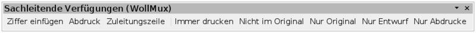
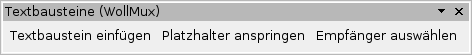
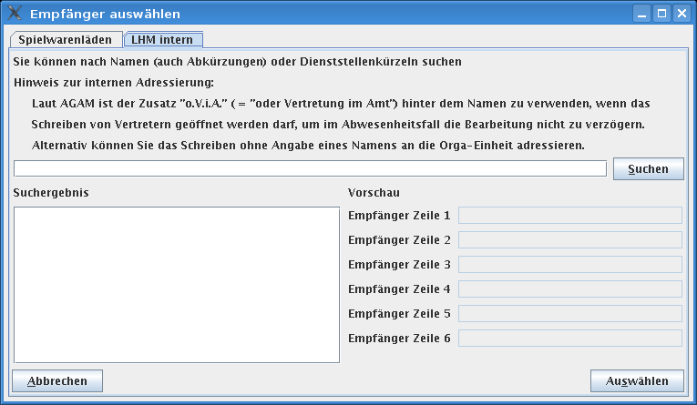
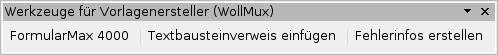
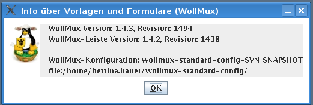

Symbolleisten
So zeigen Sie eine geschlossene Symbolleiste an: Wählen Sie in OpenOffice.org --> Menü Ansicht --> Symbolleisten und klicken Sie auf den Namen der Symbolleiste.
Symbolleiste “Sachleitende Verfügungen (WollMux)”

Die Symbolleiste “Sachleitende Verfügen” stellt Werkzeuge zur Bearbeitung von Sachleitenden Verfügungen zur Verfügung.
Hilfen für Sachleitende Verfügungen verwenden
Aufruf:
Falls noch nicht angezeigt: OpenOffice.org --> Menü Ansicht --> Symbolleisten --> Sachleitende Verfügungen (WollMux)
Die Schaltfläche “Ziffer einfügen”
Hilfen für Sachleitende Verfügungen verwenden - Ziffer einfügen
Die Schaltfläche “Abdruck”
Hilfen für Sachleitende Verfügungen verwenden - Abdruck
Die Schaltfläche “Zuleitungszeile”
Hilfen für Sachleitende Verfügungen verwenden - Zuleitungszeile
Die Schaltfläche “Immer drucken”
Hilfen für Sachleitende Verfügungen verwenden - Immer drucken
Die Schaltfläche “Nicht im Original”
Hilfen für Sachleitende Verfügungen verwenden - Nicht im Original
Die Schaltfläche “Nur Original”
Hilfen für Sachleitende Verfügungen verwenden - Nur Original
Die Schaltfläche “Nur Entwurf”
Hilfen für Sachleitende Verfügungen verwenden - Nur Entwurf
Die Schaltfläche “Nur Abdrucke”
Hilfen für Sachleitende Verfügungen verwenden - Nur Abdrucke
Symbolleiste “Textbausteine (WollMux)”

Die Symbolleiste “Textbausteine” stellt Werkzeuge zum Arbeiten mit Textbausteinen zu Verfügung.
Die Präsentation zum Textbausteinsystem-Konzept als PDF
Aufruf:
Falls noch nicht angezeigt: OpenOffice.org --> Menü Ansicht --> Symbolleisten --> Textbausteine (WollMux)
Die Schaltfläche “Textbaustein einfügen”
Nach Betätigen der Schaltfläche , wird vom Cursor ausgehend rückwärts das erste Wort ausgewählt. Dieses wird dann durch einen Textbaustein ersetzt, falls ein solcher existiert. In den einzelnen Textbausteinen können Platzhalter eingefügt werden (OpenOffice.org→Menü “Einfügen”→Feldbefehle→Andere→Reiter “Funktionen”→Feldtyp “Platzhalter”→Format “Text”). Nach dem Einfügen der Textbausteine steht der Cursor auf dem ersten eingefügten Platzhalter. Mit dem Textbaustein können auch Parameter angegeben werden, die automatisch in freie Platzhalter eingetragen werden z.B <Name des Textbaustein><definierter SEPARATOR><Einzufügender Text><definierter SEPARATOR><Einzufügender Text>
Damit Textbausteine über die Schaltfläche einfügt werden können, müssen diese über die WollMux-Konfiguration eingebunden sein. In der WollMux-Konfiguration wird auch der Textbausteinname, der dann aufgerufen wird, konfiguriert. Der Befehl “Textbaustein einfügen” kann auch über die WollMux-Konfiguration einem Tastenkürzel zugeordnet werden.
Weitere Informationen:
Die Schaltfläche “Platzhalter anspringen”
Über die Schaltfläche “Platzhalter anspringen” kann nach dem Einfügen der Textbausteine, vom ersten angefangen (falls es welche gibt), die darauf folgenden Platzhaltern angesprungen werden. Nach dem Anspringen können die Platzhalter durch Text überschrieben werden. Siehe auch Schaltfläche “Textbaustein einfügen”
Weitere Informationen:
Die Schaltfläche “Empfänger auswählen”

Über die Schaltfläche Empfänger auswählen wird der Dialog Empfänger auswählen aufgerufen. Über den Reiter LHM intern kann eine städtische Person gesucht werden und deren Adresse in das Empfängerfeld, z.B des Externen Briefkopf oder der Kurzmitteilung, übernommen werden. Der Reiter Spielwarenläden dient als Beispiel für Referate für eine Anpassung des Dialogs.
Weitere Informationen:
Symbolleiste Werkzeuge für Vorlagenersteller (WollMux)

Bei der Symbolleiste Werkzeuge für Vorlagenersteller handelt es sich um eine Ansammlung von speziellen Werkzeugen die hauptsächlich von Vorlagenerstellern benötigt werden.
Aufruf:
Falls noch nicht angezeigt: OpenOffice.org → Menü Ansicht → Symbolleisten → Werkzeuge für Vorlagenersteller (WollMux)
Die Schaltfläche “FormularMax 4000”
Über die Schaltfläche FormularMax 4000 wird der FormularMax 4000 gestartet. Der FormularMax 4000 ist eine integrierte Entwicklungsumgebung für die Erstellung und Pflege von WollMux-Formularen und Vorlagen.
Weitere Informationen:
Die Schaltfläche “Textbausteinverweis einfügen”
Über die Schaltfläche Textbausteinverweis einfügen wird der Befehl Textbaustein einfügen nicht gleich ausgewertet, sondern erst nach dem Speichern als Vorlage und spätrigen öffnen. Es kann z.B bei der Vorlagenerstellung verwendet werden, wenn gewünscht wird das die Textbausteine erst beim Verwenden der Vorlage eingefügt werden sollen. Siehe auch Schaltfläche “Textbaustein einfügen”
Weitere Informationen:
Die Schaltfläche “Fehlerinfos erstellen”

Die Schaltfläche “Fehlerinfos erstellen” erzeugt eine Datei
$HOME/.wollmux/dump<DatumUndZeit>, die wichtige Informationen für die
Fehlersuche im Zusammenhang mit dem WollMux enthält. Die Schaltfläche
“Fehlerinfos erstellen” ist vor allem für WollMux-Administratoren
geeignet, die bei der Installation und Einrichtung des WollMux auf
Fehler stoßen, für deren Lösung Unterstützung durch D-III-ITD 5.1
notwendig wird. In diesem Fall ist die über die Schaltfläche
“Fehlerinfos erstellen” erzeugte dump-Datei an ein entsprechendes
Vorfallticket anzuhängen.
Weitere Informationen
Menüeinträge
Seriendruck (WollMux)
Mit dem Menü Seriendruck können Serienbriefe erstellt werden die auch WollMux Features, wie z.B. WollMux-Formulare, verwenden.
Weitere Informationen:
Aufruf:
OpenOffice.org → Menü Extras → Seriendruck (WollMux)
Damit der Menüpunkt in OOo erscheint, ist mindestens OOo 2.0.4 notwendig.
Info über Vorlagen und Formulare (WollMux)

In dem Dialog Info über Vorlagen und Formulare wird der verwendete WollMux und die verwendete Konfiguration angezeigt. Damit der Menüpunkt in OOo erscheint, ist mindestens OOo 2.0.4 notwendig.
Weitere Informationen:
Aufruf:
OpenOffice.org → Menü Hilfe → Info über Vorlagen und Formulare (WollMux)